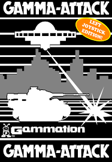
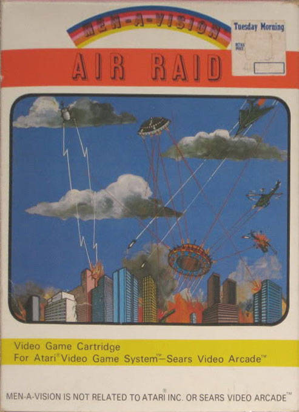
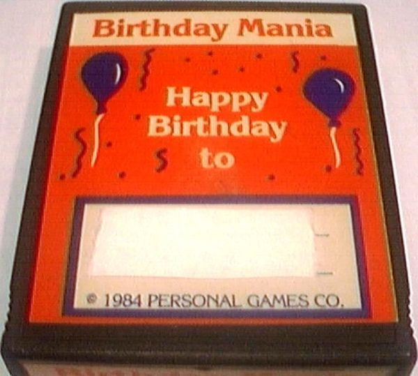
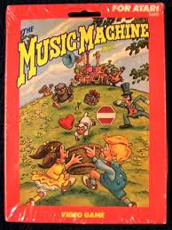
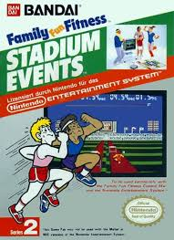
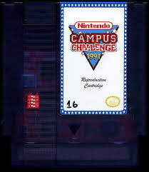
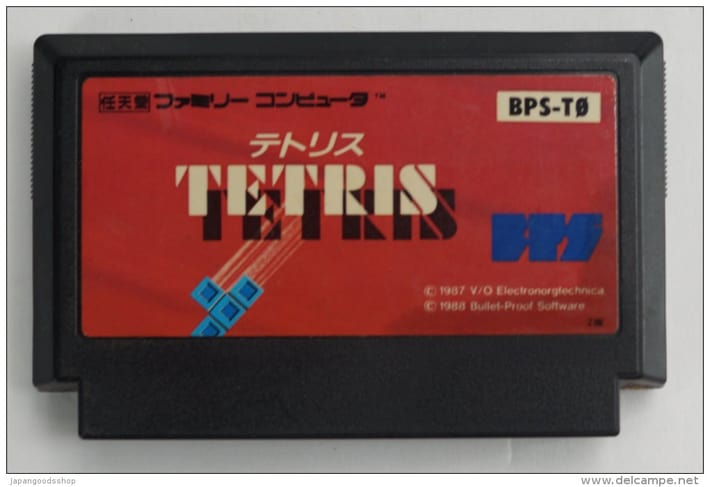
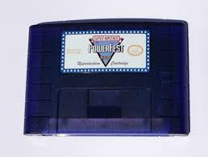
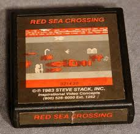

Rarest Games in the World!
| Name | Description | Console | Price |
|---|---|---|---|
| Gama Attack
 |
The game was created by a company called Gammation. when they made this game they only made a few of these cartridges with this title but theres only one that has been found and it is owned by a man named Anthony Denardo. He put it up for sale on ebay before for $500,000 |
Atari 2600 | $450,000 to $500,000 |
| Air Raid  |
Air Raid was created by a group called MenAvision. It is said that
there are only 12 cartridges of this game that are still out there
in the world. The only one out there that is a complete set sold
for $31,600. |
Atari 2600 | $31,600 |
| Birthday Mania  |
This game involved the typical activity, like blowing out birthday candles on a cake. The interesting thing about this game was that it was only sold through a magazine offer and had to be special ordered. At the time it wasn't that popular so there has only been 2 people say that they have a copy of this game. |
Atari 2600 | $6,500 |
| Music Machine  |
The Music Machine is another game that was not very popular. It is a christain based game and was only sold in some Christian bookstores. The point of this game was to catch the items falling in a basket without missing any. A person owned an unopen copy of this game and
it sold for $6,000 |
Atari 2600 | $6,000 |
Nintendo World Championships  |
In Los Angeles, California, in 1990, Nintendo held a video game competition where the players had to get a combined highscore in 3 games, which were Super Mario Bros., Rad Racer,and the last one was Tetris. Nintendo only made 116 cartridges to give to the finalist of the competition. When they made these cartridges they 90 of them grey and 26 of them were gold. To this day only 13 of the 26 gold cartridges have reappeared. |
NES | Gold- $20,000 Grey- $8,000 |
| Stadium Events  |
When Stadium Events was sold only about 2,000 copies of the game was bought buy retailers and only about 200 of them were sold and the rest were sent back and destroyed. Since then only 20 of these games of showed up and there are only 2 of them in the original packaging still. |
NES | $13,000 to $41,000 |
| Campus Challenge  |
This is another Nintendo competition game held in 1991-1992 but only held on college campuses. Nintendo went to 60 different colleges in the United States for this competition. The 3 games on this cartridge is Super Mario Bros. 3, PinBot and Dr. Mario. Jason Wilson, who has the biggest video game collection in the world, is the only person to have the ONE copy that is believed to exist in the world. |
NES | $20,000 |
| Japenese Tetris  |
One of the Rarest games out there because it was never actually released, Only 10 copies of this game are said to exist. Back when they made this game Nintendo stopped them from releasing the game because of the fact that it was pretty much exactly like the Nintendo game Tetris. |
Sega Mega Drive | $14,600 |
| Powerfest '94  |
The Powerfest 94 video game was another competition held by Nintendo in 1994. The players had to get a combined highscore within 6 minute on Super Mario Kart, Super Mario Lost Level and Ken Griffey Jr. Baseball. When the competition was held only 33 of these cartridges were created and only one of them have surfaced to this day. |
SNES | $25,000 |
| Red Sea Crossing  |
Red Sea Crossing was made by an independent programmer back in 1983. It was not even known to exist untill a person stumbled across it at a garage sell. When it was first made it was posted in a Christian magazine as a Christian video game. |
Atari 2600 | $10,000 to $13,877 |